01
Портфолио
Фото с мероприятий, живые выступления и отзывы клиентов.
ФОТОГАЛЕРЕЯ


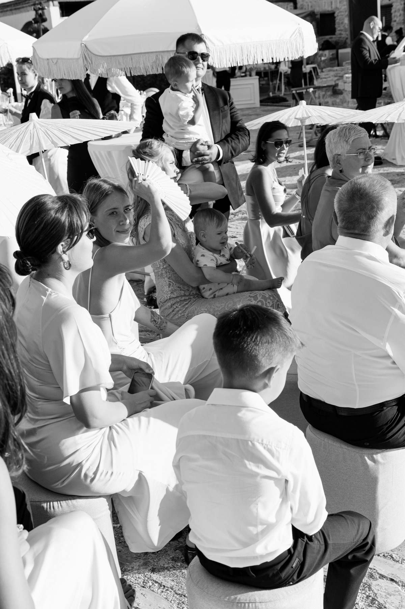
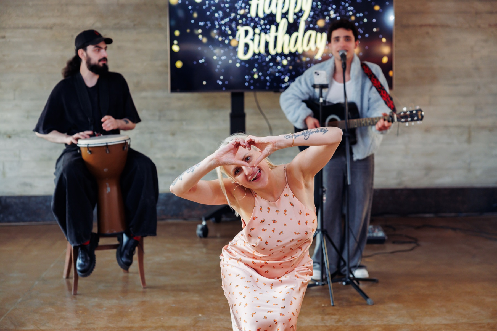
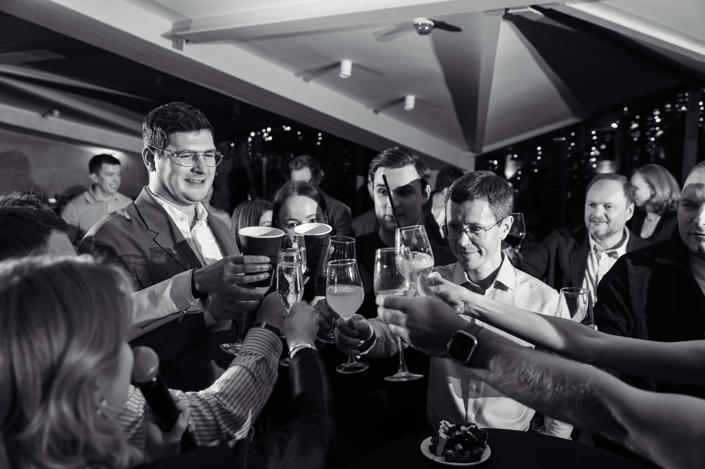
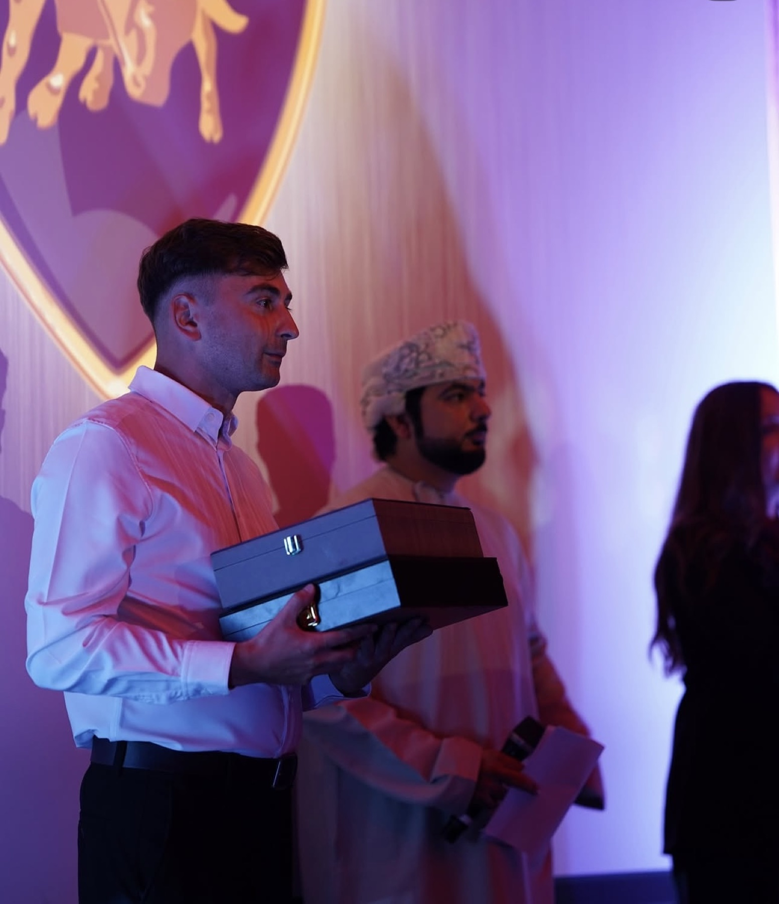
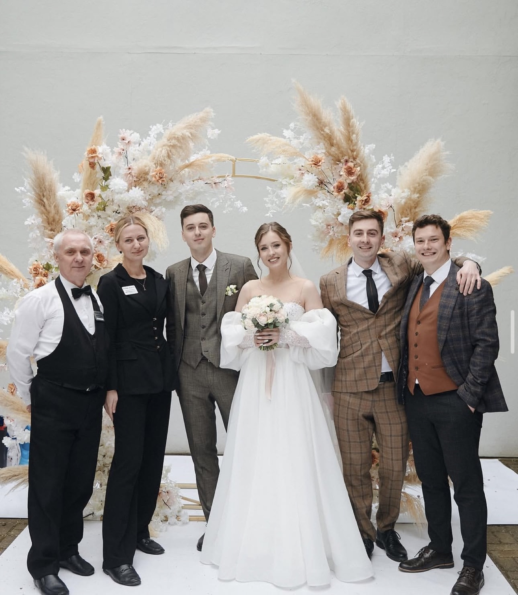
ВИДЕО
Живой звук, голос и реакция зала — лучше всего видно на видео
1 / 6
ПОЗНАКОМИТЬСЯ БЛИЖЕ
ИНТЕРВЬЮ
ИНТЕРВЬЮ
ОБО МНЕ
Два фрагмента интервью — чтобы познакомиться со мной ещё до первой встречи.
02
Интервью · часть 2
КОГДА ИДЕЯ ОБРЕТАЕТ ГОЛОС
ОТЗЫВЫ
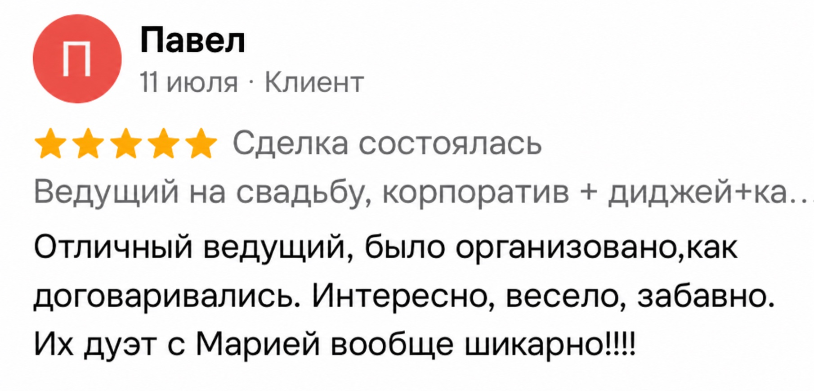
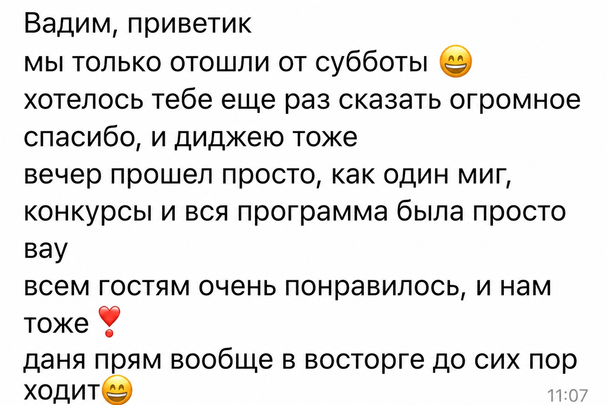
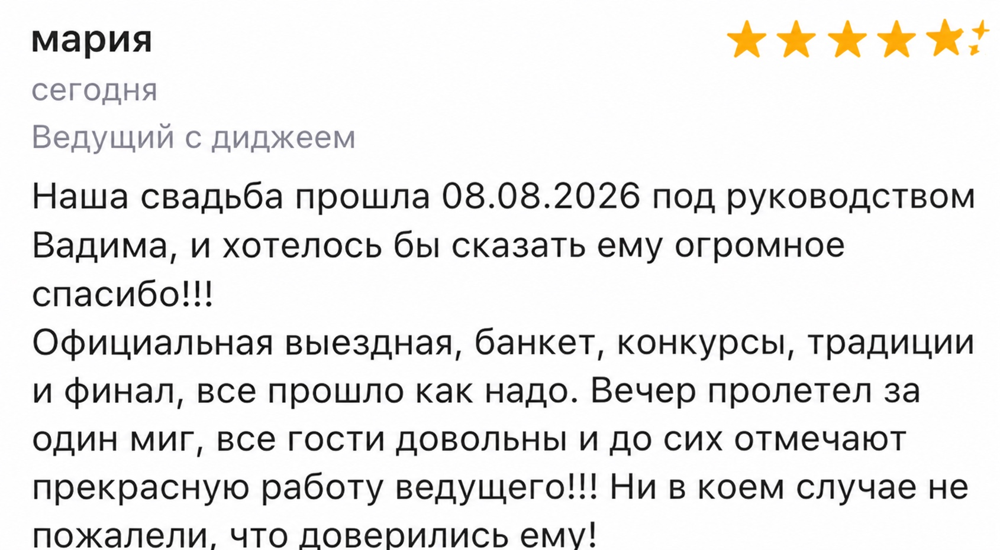
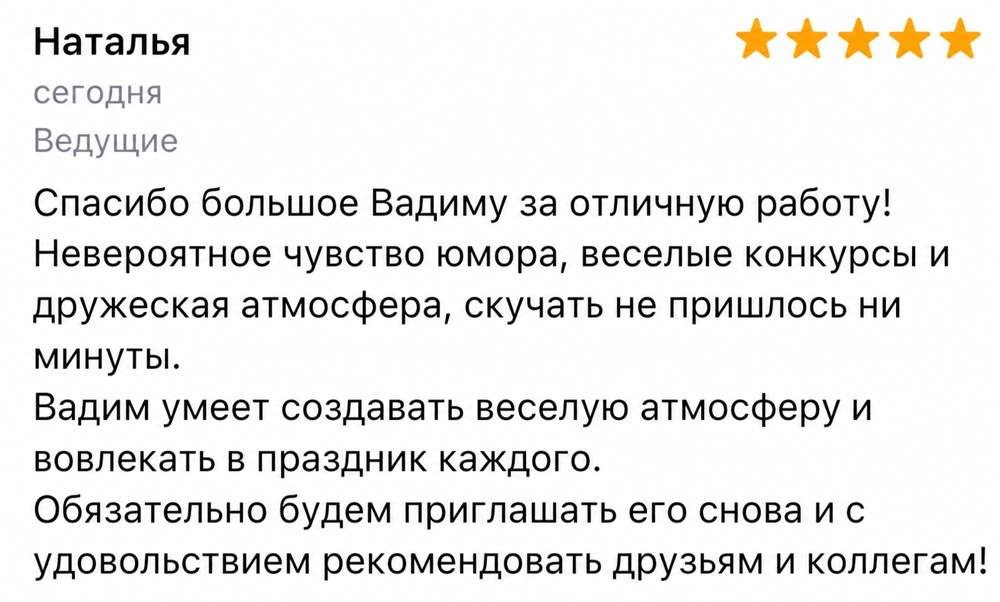
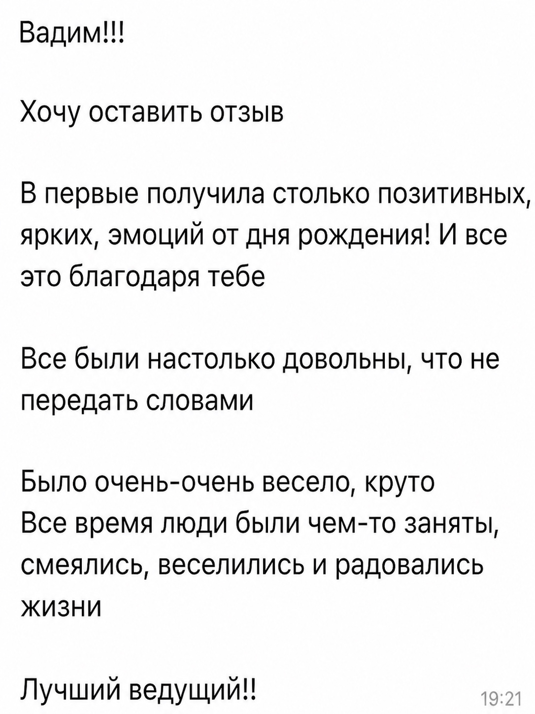
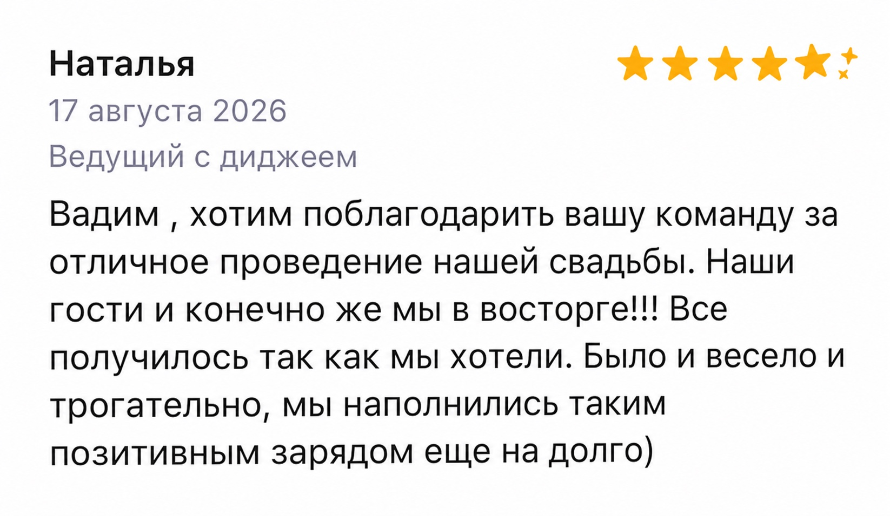
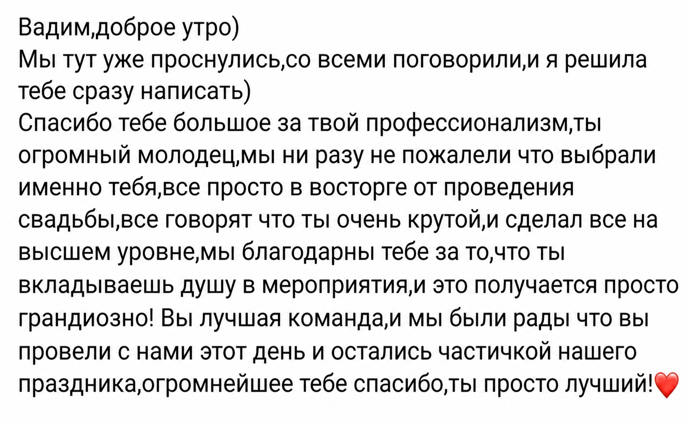
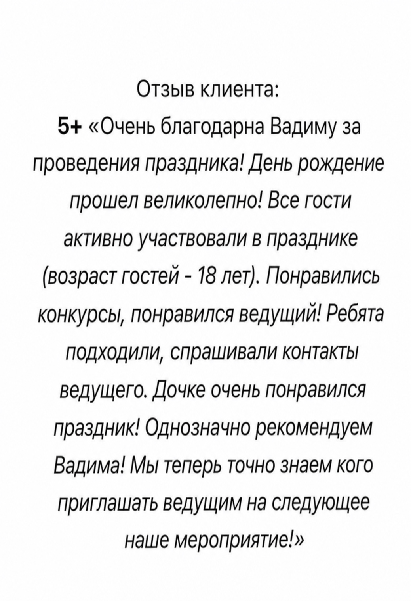